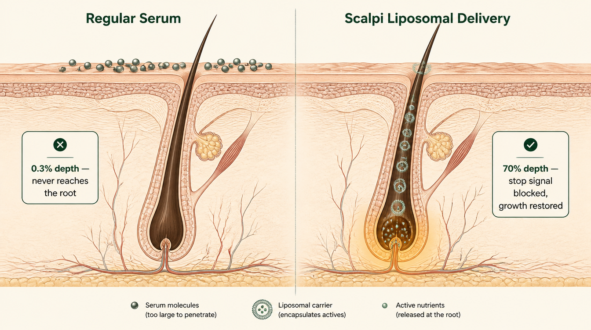
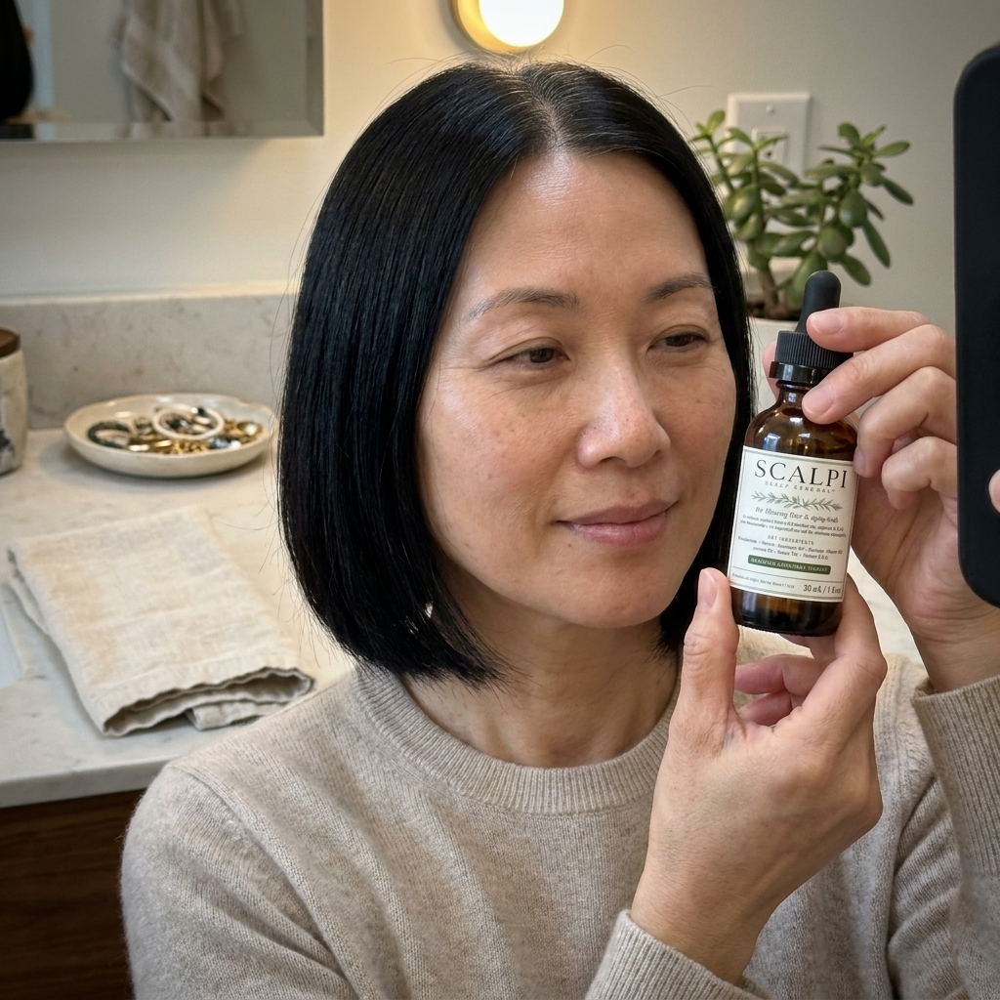
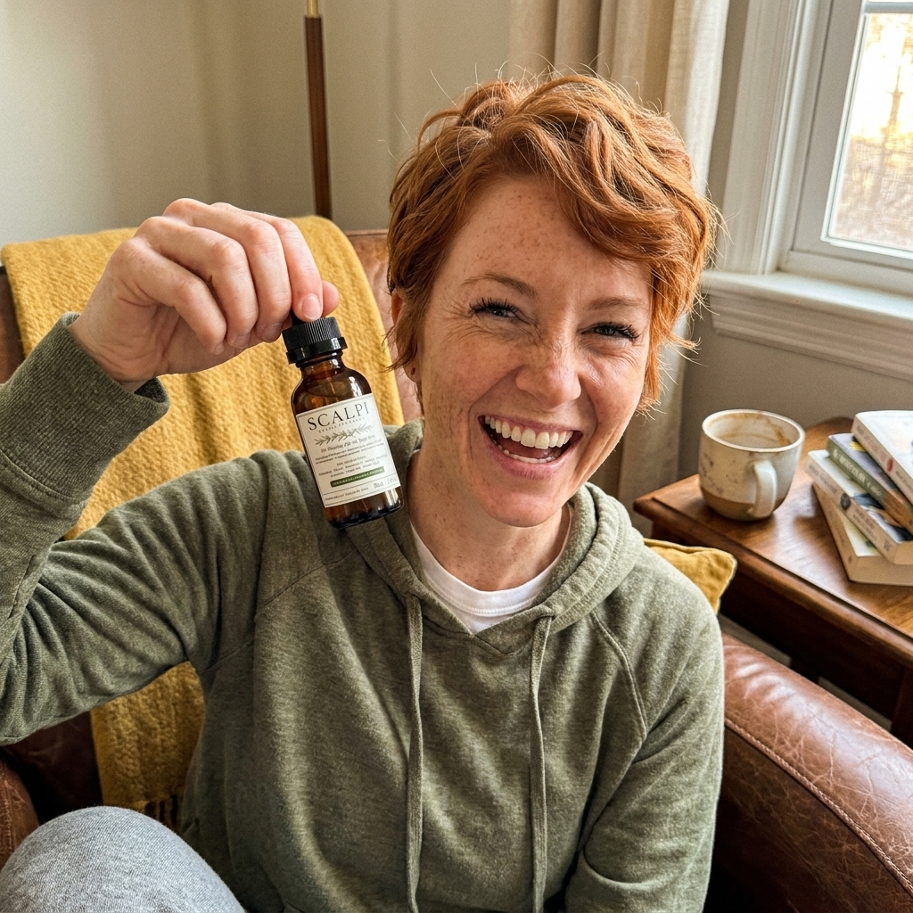
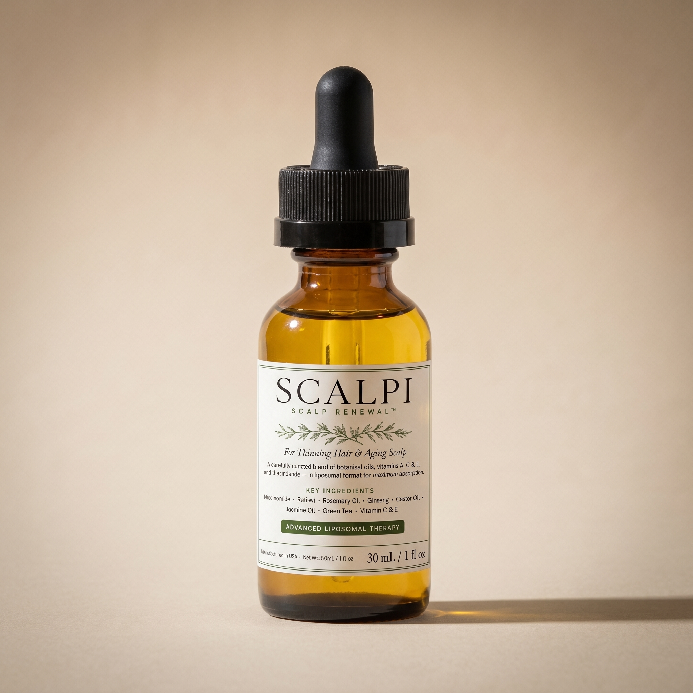

The Lie 30 Million Women Believed While Losing Their Hair
And the real reason your crown is disappearing.
A board-certified trichologist reveals what your hair products are doing to your live follicles — and the 60-second evening ritual that's finally regrowing them.
Still finding clumps in your drain every single morning?
Still standing under the bathroom vanity light, lifting your hair, watching your crown disappear a little more — and then styling around the thin spots before anyone can get close enough to see?
Still carrying the thought you'd never say out loud: Will the people who matter most still see me the same way?
You're not crazy. You're not shallow for caring this much. And you didn't sign up for “graceful aging” — you want your hair back. That is a completely reasonable thing to want.
Every product in your bathroom right now is part of the problem — no matter what the bottle promises.
If you're a woman over 45 whose doctor told you to “wait until menopause” while you're losing fistfuls in the shower, this is for you.

I've Seen This Pattern Thousands Of Times
I'm Dr. Margaret Holloway. I've spent 22 years studying the hair follicle as a live organ — not a cosmetic accessory.
I've seen thousands of women in my clinic with the same story:
- Clumps of hair circling the shower drain every morning
- A part line that gets visibly wider every month
- A crown they check obsessively in the bathroom mirror, terrified of what they'll see today
- A doctor who says everything looks “normal” and tells them to wait it out
- Thousands of dollars already spent on Nutrafol, Viviscal, biotin, collagen, rosemary oil — and nothing worked
Sound familiar? There's a reason nothing has worked. And it's not what your doctor told you.
What Your Shampoo And “Natural” Hair Oils Are Actually Doing To Your Scalp
Your hair follicles are living skin organs — just like the skin on your face. They need to breathe. Oxygen, nutrients, blood flow.
But the average woman over 45 has spent thirty years coating her scalp in silicones, heavy oils, and synthetic conditioners. Every one of those ingredients leaves a film on your scalp.
Think of it like plastic wrap — sealed across your scalp. Your follicles underneath can't breathe. Your natural scalp oil gets trapped underneath, turns rancid, and causes constant low-grade irritation around every single follicle.
That irritation tells your follicles to go dormant. They stop making new hair. They shrink. Eventually they shut down for good.
That's why your bloodwork looks fine and your hair keeps falling out. That's why rosemary oil made it worse — it added more film on top of the seal, then triggered what menopause forums call the “dread shed,” your follicles literally panicking and dumping weak hair trying to breathe. That's why oral biotin and collagen don't work on your scalp: your body can't deliver those nutrients through a sealed door.
Your follicles aren't dead. They're suffocating. Starving. Shrinking. And you cannot fix that with anything that sits on top of the seal.
You spend $300 on a vitamin C serum for your face. You read the ingredients. You apply it in the right order. You treat your facial skin like the living organ it is — because you know it takes precision to get results. But every morning, you grab whatever's in the shower and put it on your scalp — the only truly living part of your hair — and hope for the best. Your scalp is skin. Estrogen-sensitive, follicle-packed skin that responds to hormonal changes the same way your face does. The moment you start treating it with the same care you give your face, everything changes.
Here's Why Nothing Else Worked

Nutrafol gives your body building blocks. But your gut can't deliver nutrients to a scalp that's sealed shut. The pills pass through, your liver does all the work, and your hair keeps falling. (The American Journal of Gastroenterology reported cases in 2024 of hair supplements causing serious liver damage — most women have no idea.)
Viviscal packs in marine collagen and iron. Good for your blood. Doesn't reach your follicles — and the shark cartilage leaves half its users nauseous within three days.
Rogaine sits on top of the same film everything else does — trapped on the surface, never reaching the root.
Biotin gummies. Collagen powders. Hair vitamins. All help your body in a general way. None of them fix why your follicles are starving.
And rosemary oil — the thing every Reddit forum told you to try? It's one of the worst things you can put on a struggling scalp. Heavy oils are too thick to sink into your skin. They sit on top, feed the yeast that causes scalp irritation, and make the suffocation worse. They're the number one cause of the “dread shed” that has thousands of women in tears every week on r/Menopause.

And there's one more thing every product on that list has in common: they all have to travel through your whole body just to reach your scalp. Nutrafol goes through your liver. Viviscal goes through your gut. Even the topical serums that seem targeted just sit on the surface and evaporate. None of them were designed to reach the part of the follicle that's actually dying — the very base of each root, buried deep in your scalp, past the barrier everything has failed to cross. Meanwhile, your liver is doing all the work for nothing.
There is only one way to fix this: Stop sealing the scalp. Get through the barrier. Deliver real nutrients deep enough to reach the base of each root — where new hair is actually born. That's what Scalpi does.
You weren't stupid for trying Nutrafol or Mielle. You did exactly what every well-meaning forum, dermatologist, and TikTok influencer told you to do. You just didn't know that everything you were trying was sitting on top of a sealed door.
412 Hairs In One Wash. Six Weeks Later, Her Daughter Asked When She'd Gotten Extensions.
 Before
Before 8 Weeks
8 WeeksThis is Linda, 54. When she came to me, she was counting drain hairs every morning, wearing a bandana to school pickups, avoiding outdoor parties because of the wind. Her doctor had told her to “wait it out” until full menopause. Her TSH was perfect. Her iron was fine. Her bloodwork said she was the picture of health. Her crown said otherwise.
She'd spent over $2,400 on Nutrafol, Viviscal, rosemary oil, three different biotin protocols, and a $400 red light cap from Instagram. She had a wig consultation booked for the following month.
Then she started Scalpi. Her follicles unsealed. Her shedding stopped at week three. Baby hairs along her hairline at week seven. By eight weeks her daughter accused her of getting extensions. She cancelled the wig appointment.
I Dismissed It — Until My Sister Called Me Crying

I've reviewed hundreds of scalp serums over 22 years. Most are junk — fancy oils in clinical packaging, or single-ingredient gimmicks at doses too low to do anything. So when patients first started asking me about Scalpi, I brushed it off.
Then my sister called. She'd been losing hair for three years after menopause. She'd tried two oral hair supplements — the second one raised her liver levels so high her doctor made her stop immediately. Three dermatologists in three states told her there was nothing to do. She was 58. She'd just put a $6,000 deposit on a custom topper.
She wanted to try Scalpi anyway. I told her I was skeptical, but it wouldn't hurt her. Seven weeks later she sent me a video — baby hairs all along her hairline, her drain clear for the first time in two years. She was crying. I started recommending Scalpi to my patients the next morning.
Here's what makes it different from anything else you've tried: Scalpi uses tiny liquid carriers — so microscopic they can slip through your scalp instead of sitting on top of it. Think of them like a submarine, not a raft.
Those carriers deliver the ingredients that actually matter for menopausal hair regrowth: Niacinamide, Retinol, Panax ginseng, green tea EGCG, Vitamins C and E, Calendula — each backed by clinical studies. A regular hair serum barely grazes the surface of your scalp. Scalpi's delivery system reaches up to 70% of the way down each follicle. That's the difference between sitting on the seal and getting through it.
Take Niacinamide. When your follicles are under stress — which every menopausal scalp is — they send out a signal that tells themselves to stop growing. The longer that signal fires, the faster your follicles shrink. Clinical studies show Niacinamide specifically blocks that stop signal, keeping your follicles switched on. But Niacinamide sitting on the surface of a sealed scalp never reaches deep enough for this to happen. Scalpi's delivery system gets it there.
Why Niacinamide works — and why getting it deep enough is everything.

This Is The Part Nobody Believes

One dropper. Massage into the scalp at night. 60 seconds. That's it. That's the whole ritual.
No 20-minute scalp massages. No greasy foams twice a day. No $400 laser caps. No prescriptions. No styling-ruining serums you have to wash out before work. Just 60 seconds before bed, while you brush your teeth.
Why nighttime? Because that's when your scalp does its repair work. Your follicles actively rebuild between 11 PM and 4 AM. Most hair products work against that. Scalpi works with it.
The tiny carriers sink into your follicles while you sleep. By morning, everything is absorbed. No residue. No greasy pillow. No flat hair. You wake up and style like you always do — except now your follicles are actually being fed.
“My sister and I order Scalpi together every month now. I won't recommend something to my patients that I wouldn't give my own family.”
What To Expect (Week By Week)

I won't lie to you — this isn't overnight. Your follicles have been suffocating for years. They need time to come back online. Here's the pattern I see with almost every patient:
- Week 1–2
- Scalp feels different. Lighter. Less oily by afternoon. Less itching.
- Week 2–3
- Less hair in the drain. The clumps get visibly smaller.
- Week 4–6
- The shedding stops. You stop dreading washing your hair.
- Week 6–8
- Baby hairs appear — hairline, temples, the crown. Short, fine, almost invisible. But they're THERE.
- Month 3–4
- Ponytail feels heavier. Part line looks narrower. Friends start asking what you're doing differently.
- Month 6
- The full transformation. Side-by-side photos tell the story.
Every woman's timeline is a little different. Some see baby hairs at week four, some at week ten — it depends on how long your follicles have been sealed and how aggressive the inflammation was before you started. But the pattern is the same: scalp first, shedding stops, then regrowth.
Check Availability Now →Couldn't Wear Her Hair Down For Four Years. Last Month, She Wore It To Her Son's Wedding.
 Before
Before 12 Weeks
12 WeeksPatricia, 56. “Perfect” labs. Three dermatologists told her it was “just menopause.” She'd spent over $3,200 on Nutrafol, Viviscal, two different at-home laser caps, biotin protocols, and a custom-blended rosemary oil from a “hair growth specialist” on Instagram. She'd already booked a topper fitting.
Twelve weeks on Scalpi, her crown filled in enough to wear her hair down at her son's wedding — first time in four years. She emailed me a photo from the reception. I cried at my desk.
Crying In The Mirror Every Morning. Six Months Later, She Cancelled Her Wig Order.
 Before
Before 6 Months
6 MonthsTheresa, 49. Tried everything — keto, carnivore, fasting, Rogaine, three different collagen brands, PRP injections. $4,000+ spent across two years.
Now her drain stays clear for days. Her ponytail is thicker than it's been since her late thirties. She told me: “I look in the mirror in the morning and I don't flinch anymore. That's the part I didn't know I'd lost.”
Check Availability Now →I Know You're Skeptical
You should be. You've been burned before.
These Women Were Skeptical Too
They tried it anyway. Here's what they're sending me.
 Read her story
Read her story
 Read her story
Read her story
 Read her story
Read her story
 Read her story
Read her story
 Read her story
Read her story
 Read her story
Read her story

Read her story
Read her storyYour Follicles Won't Wait Forever
This is the part that keeps me up at night. Every month your follicles stay sealed, they shrink a little more. The very base of each root — where new hair is actually formed — starts to break down. Your follicles age faster. They stop growing. They shut down.
Once a follicle shrinks past a certain point, nothing brings it back. No supplement. No serum. No transplant. No amount of money.
I don't know how long your follicles have been suffocating. Six months? A year? Three years? What I know is this: every additional month they spend sealed, they shrink a little more. Past a certain point, no product, no injection, no transplant reverses it. The window doesn't close all at once. It closes bit by bit, month by month, until the follicle that could still come back becomes the one that can't.
Your follicles are still alive. That is why right now matters more than any other moment. Start while they can still respond.

up to 60% off
- Liquid liposomal delivery · 60-second nightly ritual
- Recommended by Dr. Margaret Holloway, IAT-Certified Trichologist
- Formulated in the USA · third-party tested
- 60-Day Guarantee — baby hairs or your money back
HIGH risk of sell-out. FREE shipping today.
What My Patients Are Saying
Window To Close
- Up to 60% off today, while stock lasts
- 60-Day Guarantee — baby hairs or your money back
- FREE shipping on every order today
Your follicles are still alive. Start while they can still respond.